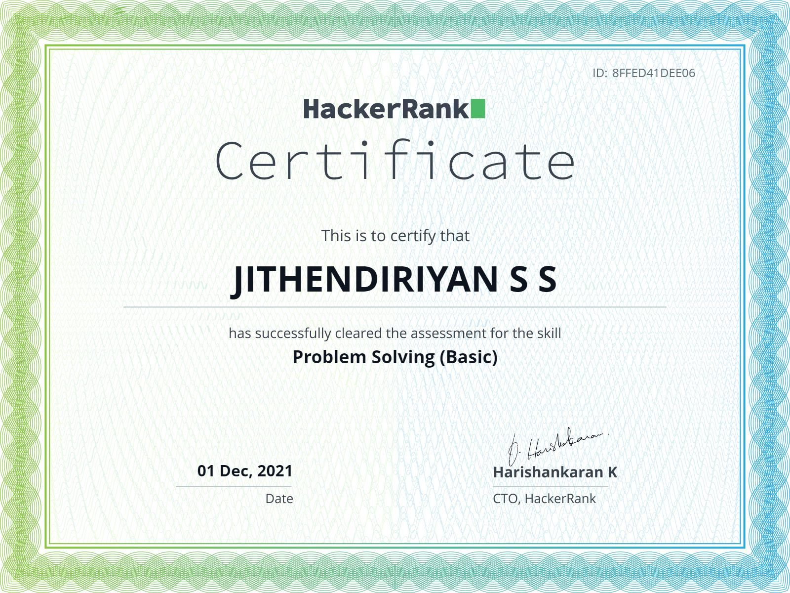
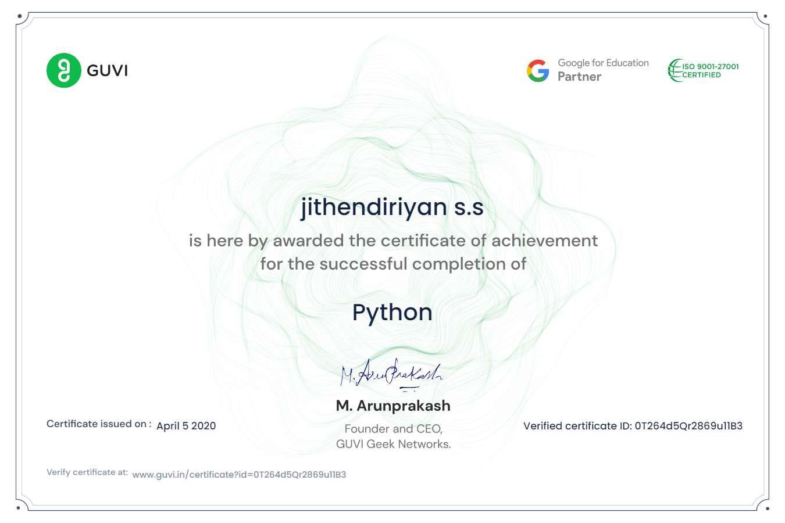

Data Science: Proficient in data analysis, data visualization, and machine learning techniques using Python and libraries like NumPy,Pandas and Scipy.
Web Development: Strong knowledge of HTML/CSS for front-end development
Databases: Experienced in working with both relational databases (MySQL) and NoSQL databases (MongoDB) for data storage and retrieval.
Machine Learning: Skilled in building and deploying machine learning models for tasks such as classification, regression, and clustering.
Data Visualization: Able to create interactive and informative data visualizations using tools like Matplotlib, Plotly,Seaborn and Tableau.
Problem Solving: Strong analytical and problem-solving skills with a focus on delivering actionable insights and solutions.
Collaboration: Effective communicator and team player, accustomed to collaborating on projects and working in agile environments.

